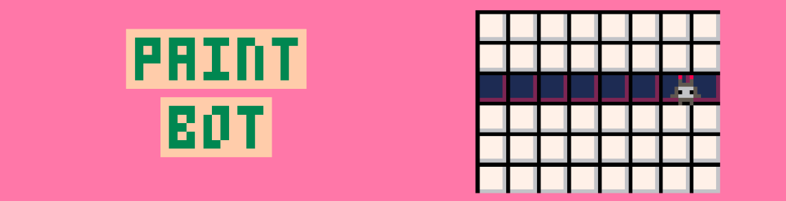
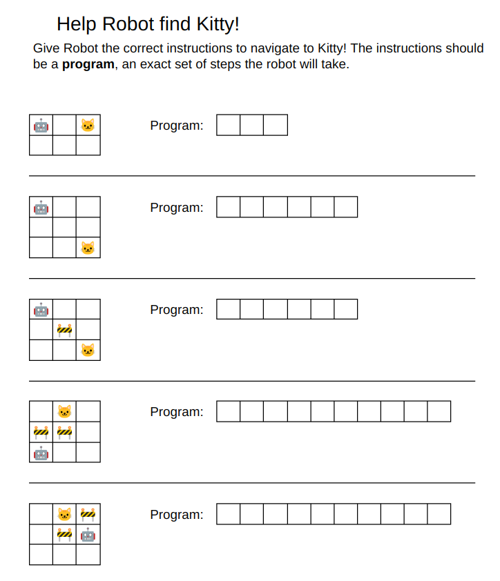
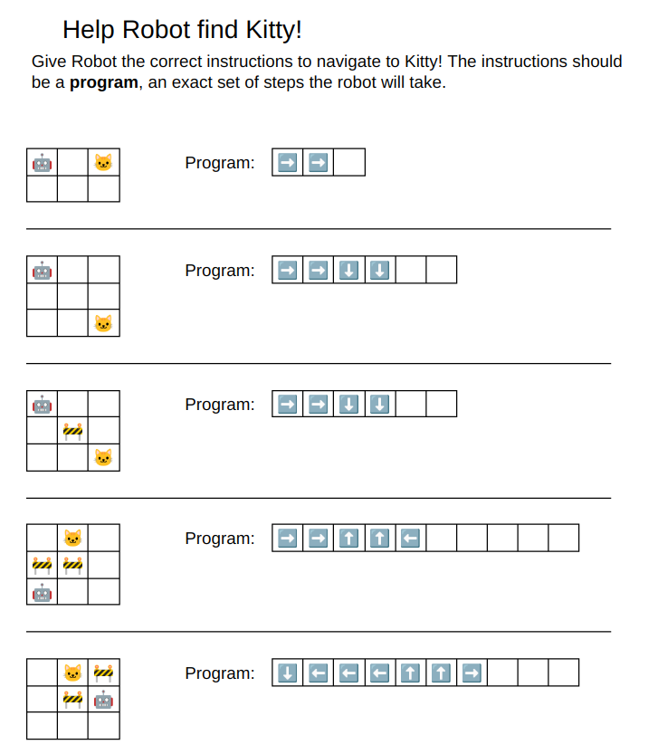
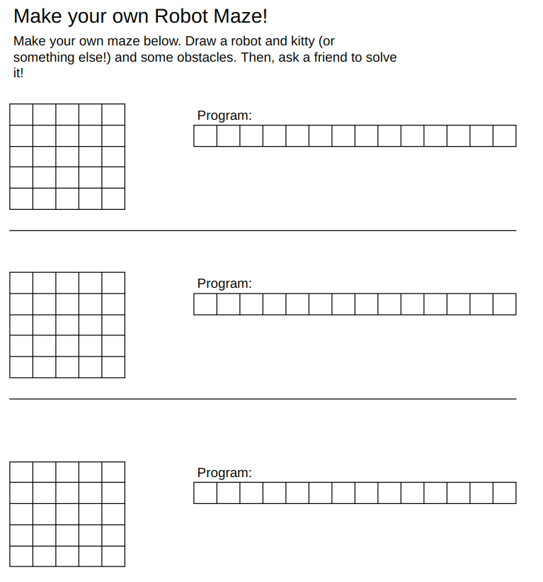

Brownie Coding Basics
Brownie Coding Basics
How robots use algorithms to work
Algorithms are a step of instructions for machines or computers to follow.
They are very similar to a recipe for cooking, or instructions that might come with a model kit.
- 🤖 "An algorithm is a step-by-step plan, like instructions for a robot to follow."
- Example: "To move a robot arm, we write: 1) Open hand, 2) Grab toy, 3) Lift up!"
- 🧩 "Robots use algorithms to do cool things!"
- Self-driving cars: Algorithms help them stop at red lights.
- Mars rovers: Algorithms let them explore without crashing into rocks.
- Toy robots (like LEGO Mindstorms): You can program them to dance or solve mazes!
- 💡 "People write algorithms to solve problems."
- "If a robot sees a wall (→), its algorithm says: Turn left!"
There are lots of awesome women in robotics and manufacturing who use algorithms to work!
- Dr. Ayanna Howard - Built robots for NASA to explore Mars! Now she makes robots that help kids learn.
- Dr. Cynthia Breazeal - Created the first friendly robot (Jibo) that talks like a human!
- Ruzena Bajcsy - A "robot grandma" who teaches robots to sense the world (like feeling how hard to hug someone).
- Debbie Sterling (Manufacturing) - Founded GoldieBlox, a company that makes engineering toys for girls!
- Dr. Fei-Fei Li - Teaches robots to "see" using cameras (like recognizing a kitten vs. a puppy).
Activity 1: Paper - guide the robot to their goal with an algorithm
You can print out and use the following worksheets!



Activity 2: Computer - Paint Bot
See if you can write algorithms to help paint bot complete all 10 puzzles!
Give Paint Bot directions by clicking directions or the paint button, then click "GO" to let it try out the pattern.
Paint Bot needs to learn to copy the patterns exactly!